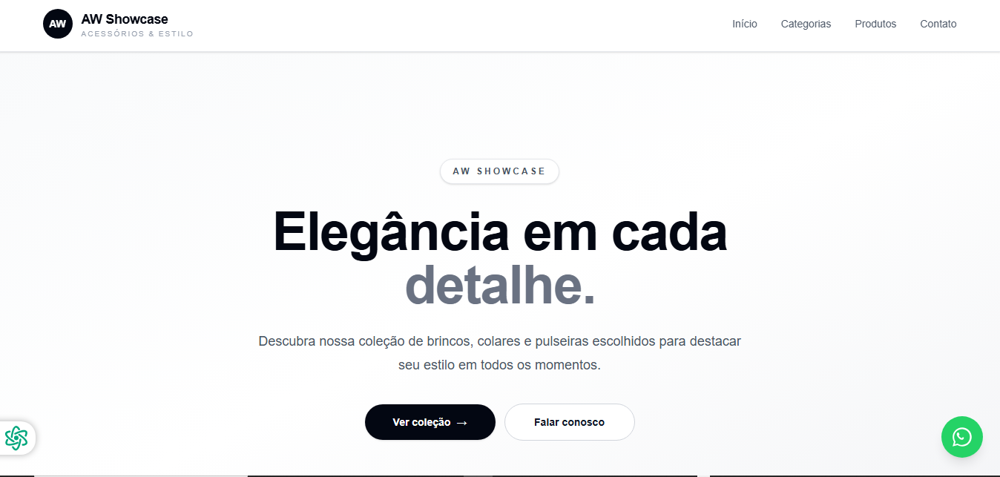

Catálogo Online
Catálogo digital com painel administrativo, gerenciamento de produtos e imagens.
HTML5CSS3JavaScriptNode.js
Construindo soluções robustas através de projetos práticos. Especialista em arquitetura de APIs e interfaces modernas, unindo lógica de negócio e performance para empresas e projetos independentes.
Minha jornada como desenvolvedor é movida pela prática constante. Acredito que a melhor forma de dominar uma tecnologia é resolvendo problemas reais de ponta a ponta.
Desenvolvo ecossistemas completos com foco em Node.js e JavaScript, priorizando sempre o código limpo, escalabilidade de banco de dados e a melhor experiência para o usuário final.
Interfaces de alta performance, otimizadas para SEO e conversão, utilizando as melhores práticas de UI/UX.
Desenvolvimento de aplicações sob medida para automação de processos, gestão de dados e Dashboards interativos.
Construção de APIs escaláveis, integração de bancos de dados robustos e sistemas de autenticação seguros.
Catálogo digital com painel administrativo, gerenciamento de produtos e imagens.

Vitrine digital responsiva com integração entre interface, API e banco de dados.

Sistema de gestão comercial com recursos para controle de estoque, clientes e vendas.

Plataforma para organização de fluxos de trabalho e acompanhamento de processos.

Sistema demonstrativo para gestão de condomínio, administração e controle de acessos.
E-commerce demonstrativo para o segmento pet, com catálogo, carrinho, checkout e gestão administrativa.
Estou aberto a novas oportunidades e desafios técnicos.